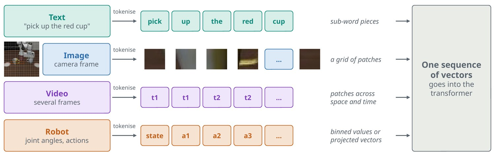
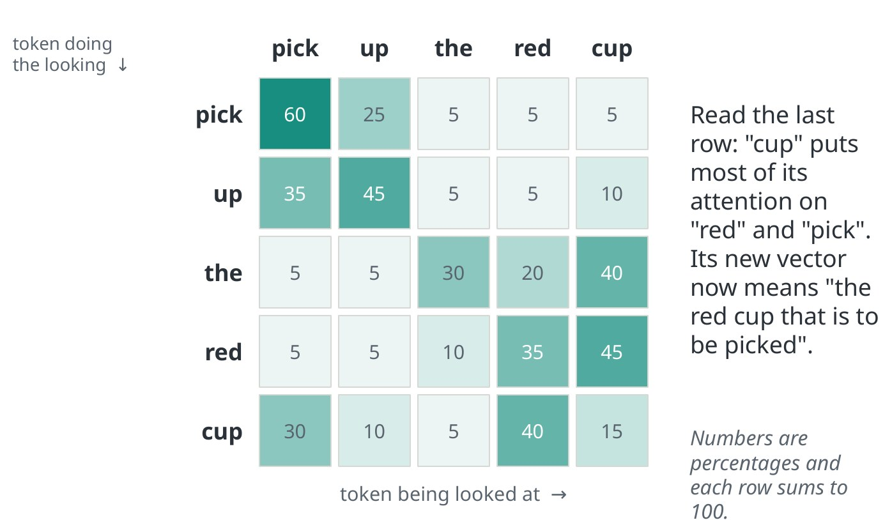
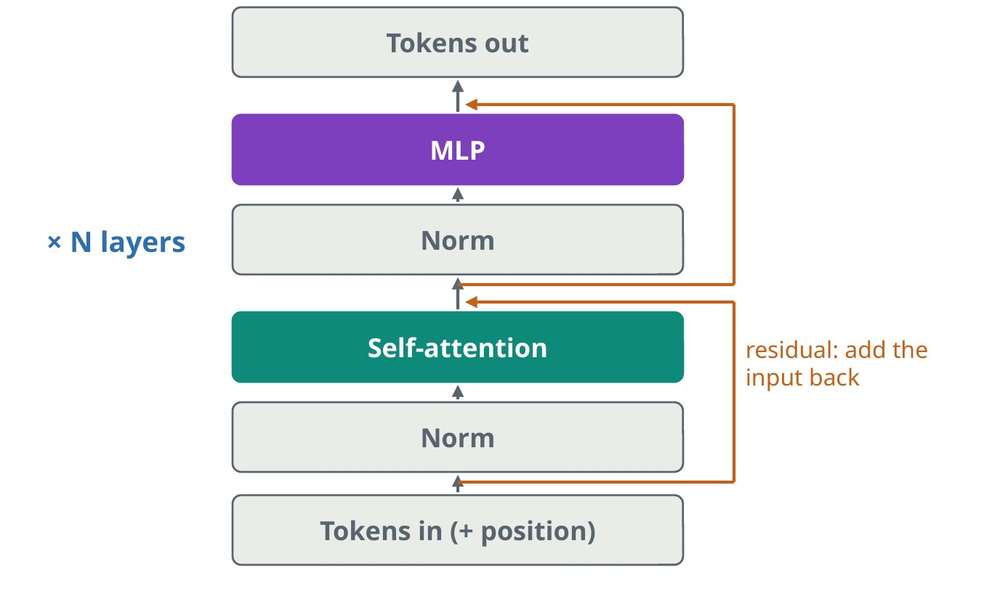

Everything becomes tokens
A transformer does not read words or pixels. It reads one sequence of vectors, called tokens, and the first job of any model is to turn its input into that sequence.

Text is split into sub-word pieces, and each piece is looked up in a table of learned vectors. An image is cut into a grid of small patches, for example 16 by 16 pixels, and each patch is flattened and projected to a vector. A 224-pixel image cut this way gives 14 × 14 = 196 tokens. Video adds a time axis. Robot joint angles and actions are either sorted into numbered bins, so they look like words, or projected directly as continuous vectors.
After this step the model neither knows nor cares where a token came from. That indifference is the reason one architecture now serves language, vision and robot control.
Attention: every token looks at every other token
Attention is how a token gathers the context it needs. Each token produces three vectors: a query (what am I looking for?), a key (what do I contain?) and a value (what do I pass on?). A token’s query is compared with every key. The scores go through a softmax, so they become weights that sum to one, and the token’s new vector is the weighted sum of the values.

Read the last row of the grid. The token “cup” puts most of its weight on “red” and “pick”, so its updated vector now means something like “the red cup that is to be picked”. A model runs several of these in parallel, called heads, so that different heads can follow different relationships.
Self-attention relates tokens within one sequence. Cross-attention lets one sequence read another, for example action tokens reading image features. The cost of attention grows with the square of the sequence length, which is why video and long robot histories are expensive.
Inside one block

A transformer is the same block repeated many times. Each block has two parts. The attention sub-layer moves information between tokens. The MLP sub-layer is a small network applied to each token on its own, and it holds most of the model’s parameters.
Each sub-layer first normalises its input and then adds its output back to that input. The addition is the residual connection: it gives gradients a direct path to the early layers, which is what allows very deep stacks to train.
Attention on its own has no sense of order, so position has to be injected. Most current models use rotary position encoding, which rotates the query and key vectors by an angle that depends on position, so attention can reason about how far apart two tokens are.
Three shapes, and how they are made fast
| Shape | What a token can see | Good at | Where it is used |
|---|---|---|---|
| Encoder | All tokens, in both directions | Understanding an input | Vision encoders, embeddings, classifiers |
| Decoder | Only earlier tokens | Generating a sequence step by step | Language models, vision-language models |
| Encoder-decoder | The decoder also reads the encoder’s output | Mapping one sequence to another | Translation, some action policies |
When a decoder generates, the keys and values of earlier tokens do not change, so they are stored and reused. This is the KV cache, and it is why producing the next token is far cheaper than reprocessing the whole prompt. Robot policies lean on the same idea: a large model encodes the camera images once, and a small action network reuses that result many times. The note on robot policies picks this up.
Common mistakes
- Forgetting position. Without position information a transformer treats its input as an unordered set.
- Reading attention maps as explanations. They show where weight went, which is a hint about the model’s reasoning and not a proof.
- Ignoring the quadratic cost. Doubling image resolution gives four times the tokens and about sixteen times the attention cost.
Terms
- Token
- One unit of input, represented as a vector.
- Embedding
- The vector a token is mapped to.
- Head
- One of several attention computations run in parallel.
- Context length
- The most tokens the model can read at once.